San Juan Travel Guide
Capital of Puerto Rico, is a vibrant city that seamlessly blends rich history with modern culture and is known for its colorful colonial architecture, lively nightlife, and beautiful beaches.


-400.jpg)

-400.jpg)
,_Mason_Street,_Cable-Car-Haltestelle_--_2022_--_2947-400.jpg)

Places to See in San Juan

Dough4872, CC BY-SA 4.0, via Wikimedia Commons; Image Size Adjusted

Balneario Del Escambron
Protected beach park ideal for swimming and snorkeling
Dough4872, CC BY-SA 4.0, via Wikimedia Commons; Image Size Adjusted
Caleta De San Juan
Small urban beach popular for swimming and diving
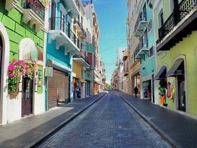
Dough4872, CC BY-SA 4.0, via Wikimedia Commons; Image Size Adjusted
Calle De La Fortaleza
Historic street famous for colorful umbrellas and shops
Dough4872, CC BY-SA 4.0, via Wikimedia Commons; Image Size Adjusted
Calle Loiza
Dynamic neighborhood artery where food, music, and local culture pulse
Dough4872, CC BY-SA 4.0, via Wikimedia Commons; Image Size Adjusted
Casa Blanca
Oldest surviving Spanish domestic architecture in the Caribbean

Dough4872, CC BY-SA 4.0, via Wikimedia Commons; Image Size Adjusted
Castillo San Felipe Del Morro
Iconic Spanish fortress overlooking the Atlantic Ocean
Dough4872, CC BY-SA 4.0, via Wikimedia Commons; Image Size Adjusted
Cathedral Basilica Menor De San Juan Bautista
One of the oldest cathedrals in continuous use in the Western Hemisphere
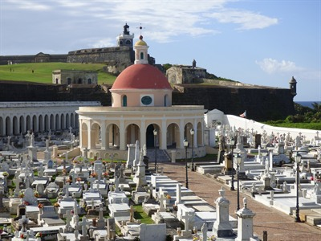
Dough4872, CC BY-SA 4.0, via Wikimedia Commons; Image Size Adjusted
Cementerio Santa Maria Magdalena De Pazzis
Historic cliffside cemetery where stone walls meet the sea
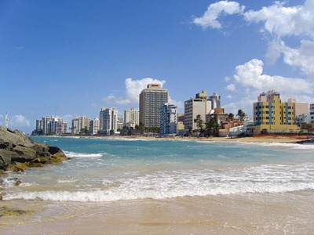
Dough4872, CC BY-SA 4.0, via Wikimedia Commons; Image Size Adjusted
Condado Beach
Popular city beach with hotels and oceanfront views
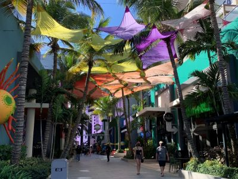
Dough4872, CC BY-SA 4.0, via Wikimedia Commons; Image Size Adjusted
Distrito T-Mobile
Contemporary multi-use entertainment district for music, sport, and dining
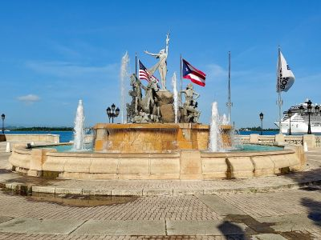
Dough4872, CC BY-SA 4.0, via Wikimedia Commons; Image Size Adjusted
Fuente Raices
Architectural monument honoring Puerto Rico's many cultural roots
Dough4872, CC BY-SA 4.0, via Wikimedia Commons; Image Size Adjusted
I Love PR Sign
Bold contemporary symbol of island pride and welcoming spirit
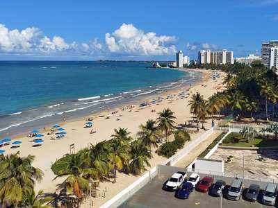
Dough4872, CC BY-SA 4.0, via Wikimedia Commons; Image Size Adjusted
Isla Verde Beach
Iconic northeastern shoreline blending resort energy with natural scenery
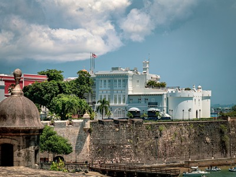
Dough4872, CC BY-SA 4.0, via Wikimedia Commons; Image Size Adjusted
La Fortaleza
Oldest continuously inhabited executive residence in the Western Hemisphere
Dough4872, CC BY-SA 4.0, via Wikimedia Commons; Image Size Adjusted
La Placita De Santurce
Neighborhood plaza transformed from produce market to vibrant social hub
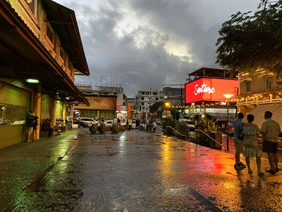
Dough4872, CC BY-SA 4.0, via Wikimedia Commons; Image Size Adjusted
La Plaza Del Mercado De Santurce
Historic central market plaza at the heart of Santurce daily life
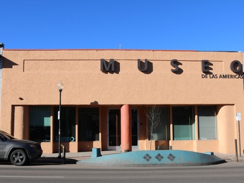
Dough4872, CC BY-SA 4.0, via Wikimedia Commons; Image Size Adjusted
Museo De Las Americas
Cultural museum housed in a vast 18th-century Spanish military barracks
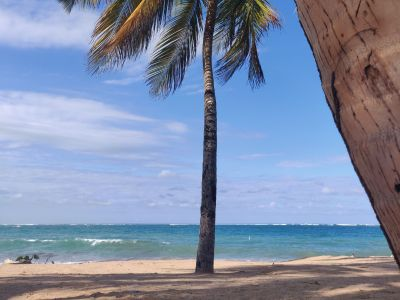
Dough4872, CC BY-SA 4.0, via Wikimedia Commons; Image Size Adjusted
Ocean Park Beach
Open Atlantic shoreline along a quieter residential stretch of the city
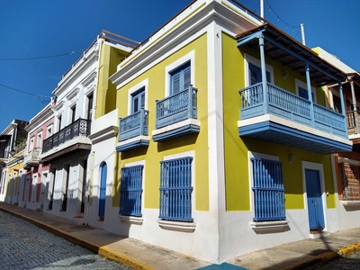
Dough4872, CC BY-SA 4.0, via Wikimedia Commons; Image Size Adjusted
Old San Juan
Historic district known for colorful colonial architecture
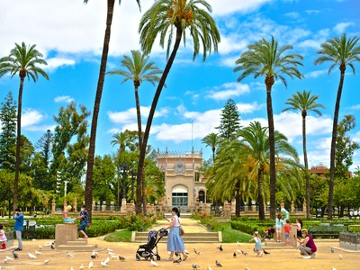
Dough4872, CC BY-SA 4.0, via Wikimedia Commons; Image Size Adjusted
Parque De Las Palomas
Quiet overlook against historic city walls with panoramic bay views
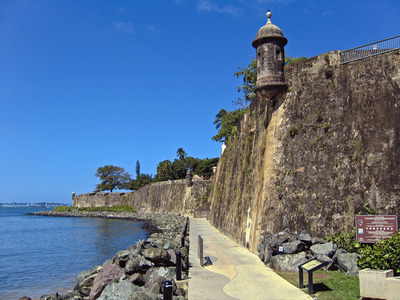
Dough4872, CC BY-SA 4.0, via Wikimedia Commons; Image Size Adjusted
Paseo Del Morro
Scenic waterfront path along historic city walls
Dough4872, CC BY-SA 4.0, via Wikimedia Commons; Image Size Adjusted
Playita Del Condado
Sheltered lagoon-side beach with calm water in the Condado district
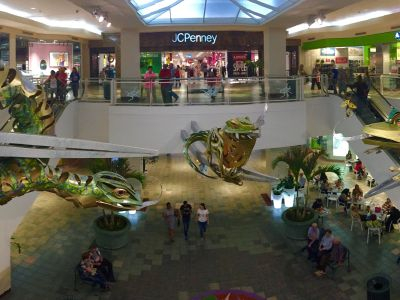
Dough4872, CC BY-SA 4.0, via Wikimedia Commons; Image Size Adjusted
Plaza Las Americas
Largest shopping mall with extensive retail and dining options
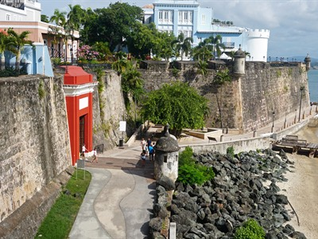
Dough4872, CC BY-SA 4.0, via Wikimedia Commons; Image Size Adjusted
Puerta De San Juan
Historic city gate linking harbor to Old San Juan streets
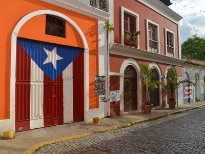
Dough4872, CC BY-SA 4.0, via Wikimedia Commons; Image Size Adjusted
Puerto Rican Flag Door
Iconic painted door in Old San Juan celebrating Puerto Rican pride
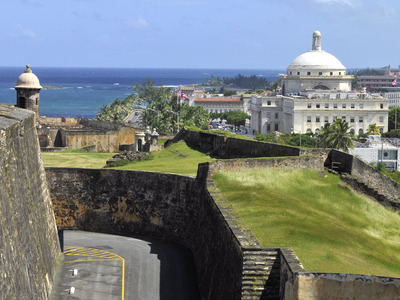
Dough4872, CC BY-SA 4.0, via Wikimedia Commons; Image Size Adjusted
San Cristobal Castle
Expansive fortress showcasing colonial military history
Overview
San Juan is the capital and largest city of Puerto Rico, with about 340,000 residents and a metropolitan area of about two million, on the island's northern coast facing the Atlantic Ocean. It is one of the oldest European-founded cities in the Americas and the oldest capital city under the U.S. flag, famous for the forts of El Morro and San Cristóbal, the blue cobblestone streets of Old San Juan, its beaches and its nightlife.
People come to San Juan to walk the walls and forts of Old San Juan, a UNESCO World Heritage Site, swim and sunbathe at Condado and Isla Verde, eat mofongo and drink piña coladas, hear salsa and reggaeton, and use the city as a base for exploring the island. It is also a major cruise port and the main airport for the island, and U.S. citizens do not need a passport to visit.
History
The Spanish explorer Juan Ponce de León founded the first settlement, Caparra, in 1508, and the city moved to its present site, the islet of Old San Juan, in 1521. Because of its position at the entrance to the Caribbean, it was fortified heavily against pirates and European rivals: El Morro was begun in 1539 and San Cristóbal was built from the 1630s to the 1780s, and the city withstood attacks by Francis Drake in 1595 and the Dutch in 1625. La Fortaleza, built in 1533, is the oldest executive mansion in continuous use in the Western Hemisphere. After the Spanish-American War, the United States took control of the island in 1898. The city grew far beyond the walls in the 20th century, with neighborhoods like Santurce and Condado, and has since faced hurricanes, including Maria in 2017, and economic challenges while remaining the cultural center of the island.
Sightseeing and Popular Landmarks
Castillo San Felipe del Morro and Castillo San Cristóbal are part of the San Juan National Historic Site, with massive walls, tunnels and sea views. La Fortaleza, the governor's residence, Casa Blanca, the home of the Ponce de León family, the Cathedral of San Juan Bautista, with the tomb of Ponce de León, and the San Juan Gate are key landmarks. Strolling down Calle de la Fortaleza, the Parque de las Palomas with its pigeons, Paseo del Morro and the colorful Caleta de San Juan are classic Old San Juan experiences, and the I Love PR sign and Puerto Rican flag door are popular photo spots.
Culture and Museums
The Museo de Arte de Puerto Rico in Santurce is the island's largest art museum, and the Museo de las Américas in Old San Juan covers the history and art of the Americas. La Placita de Santurce and the Plaza del Mercado de Santurce are the heart of the city's nightlife and food, and Calle Loíza is known for its bars and murals. The Distrito T-Mobile is a major concert and entertainment venue. The Fiestas de la Calle San Sebastián in January is the largest street festival in the city, and local foods include mofongo, alcapurrias, tostones and rum cocktails. The nearby Bacardí distillery tour is a popular excursion.
Parks
San Juan's urban beaches are among its best public spaces: Condado, Isla Verde, Ocean Park and the family-friendly Balneario del Escambrón, with calm water. Paseo del Morro follows the old city wall along the sea, and the grassy field in front of El Morro is a favorite for kite flying. The Parque Luis Muñoz Rivera and the Bosque de San Patricio add green space.
Sports
San Juan is the center of Puerto Rico's sports scene. The Santurce Crabbers (Cangrejeros de Santurce) are one of the island's oldest professional baseball clubs and play in the Puerto Rican winter league, which once featured Roberto Clemente. Hiram Bithorn Stadium has hosted Major League Baseball games and World Baseball Classic matches, and the Roberto Clemente Coliseum and the José Miguel Agrelot Coliseum host basketball, boxing and concerts. Puerto Rico competes internationally as its own team in the Olympics and baseball classics.
Seasons and Weather
San Juan has a tropical climate, with highs in the mid to upper 80s °F and water temperatures in the high 70s to 80s °F throughout the year. The dry season, from about December to April, is the most comfortable and busiest time for tourists. Summer is hotter, humid and rainy, and hurricane season runs from June to November. Hurricane Maria in September 2017 and Hurricane Fiona in 2022 caused widespread damage, so check forecasts when planning a trip in late summer or fall.
This article uses material from the Wikipedia articles and official tourism pages for San Juan, which are released under the Creative Commons Attribution-Share-Alike License 3.0. Additional information from the National Park Service: San Juan National Historic Site, UNESCO World Heritage Centre, National Weather Service San Juan and the official websites of the attractions and teams mentioned.